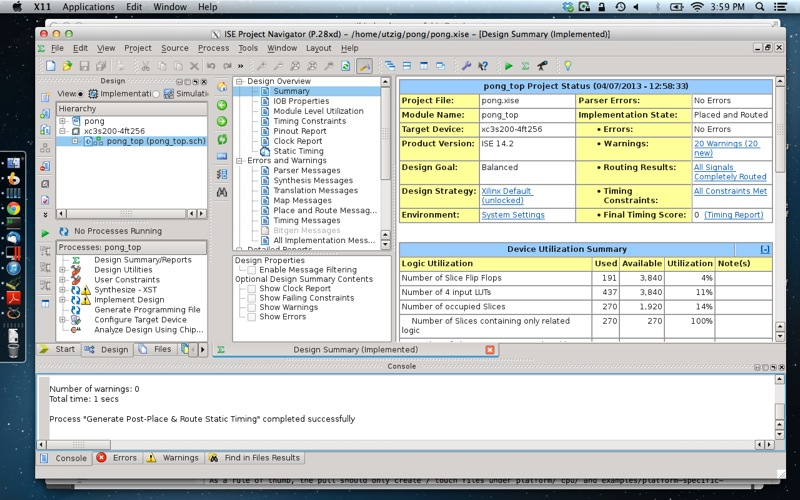

Running Bootcamp Linux on Parallels
Some weeks after I bought my MacBook Pro about two years ago I decided that I needed to run both Mac OS X, Windows and Linux on it so at the time I upgraded the original HDD to a Seagate 7200rpm 750GB disk.
I installed both Windows 7 and Linux as Bootcamp partitions. Bootcamp for Mac basically does BIOS emulation and enables you to use old style MBR partitions for booting operating systems (and some other things too). Mac OS X uses EFI and GPT.
I use rEFIt to triple boot my system. It displays an operating system chooser at startup with fancy graphics and also maintains consistency between GPT and MBR partitions.
But the problem is that it sucks having to reboot everytime you have to run a program on another operating system!
For Windows, I've been running it on Parallels Desktop as well as native. Parallels does some fancy integration enabling Windows programs to run on Mac OS X screen and works as Mac programs, including clipboard integration and such.
So my objective was to run Linux on Parallels as well is runs Windows. For Windows you just have to create a new VM using a Bootcamp partition and Parallels takes care of all configurations and everything is done automatically. For Linux you have to do pretty much everything manually. Almost everything is standard VM configuration and straightforward for those used to running VM software. The hardest part is making the hard disk emulation run from a native partition.
So I started adding the machine's disk, enumeration and selected the partition using the GUI. But when I started the machine it hanged with error: missing operating system.
Looking into the internals of a Parallels VM, there is one directory for each created VM. For Linux it was located in:
/Users/utzig/Documents/Parallels/Arch Linux.pvm/ST9750420AS (disk0).hdd/
The contents were basically these (with some extra backups, etc):
DiskDescriptor.xml PhysicalGpt.hds PhysicalMbr.hds
DiskDescriptor's contents seemed right. I tried comparing the _hds_ files to the Windows VM's counterparts and they were equal. And here's the catch. Those who remember the old days of _DOS_ will probably remember that there was only one MBR partition that could boot a system. The partition set as bootable. So this was the main problem, I had created the Linux VM having my Windows partition as bootable!
So I removed again the hard disk from the Linux VM in Parallels and then changed the bootable partition on the command line. To do that on Mac OS X, open the terminal and run:
$ sudo fdisk -e /dev/rdisk0 fdisk: 1> p Disk: /dev/rdisk0 geometry: 91201/255/63 [1465149168 sectors] Offset: 0 Signature: 0xAA55 Starting Ending #: id cyl hd sec - cyl hd sec [ start - size] ------------------------------------------------------------------------ 1: EE 1023 254 63 - 1023 254 63 [ 1 - 409639] <Unknown ID> 2: AF 1023 254 63 - 1023 254 63 [ 409640 - 997771856] HFS+ 3: 07 1023 254 63 - 1023 254 63 [ 998445056 - 230230016] HPFS/QNX/AUX *4: 83 1023 254 63 - 1023 254 63 [1228675072 - 236211912] Linux files* fdisk: 1>
The necessary commands to know here are: p to print the partition table, f to set the bootable partition and quit to quit saving. So by running f 4 I set the Linux partition to bootable which is shown by the star symbols enclosing the line.
Then I re-added the hard disk to the Linux VM which this time booted to GRUB. Linux hanged because it couldn't find the root partition. After some fiddling I found that I had to add the line:
MODULES="ahci libahci sd_mod"
to /etc/mkinitcpio.conf and re-create the initramfs image. That does make some sense but I don't know exaclty why it would work without it when booting native.
After being able to get to the Linux console I spent some time cleaning up to run on a VM.
But the funny part really comes when configuring Linux's graphic programs to run on Mac OS X kinda like Parallels does for Windows with Coherence. For Linux it relies on X11 and since Mac OS X already has X11.app or you can also run XQuartz (which I do), I could enable Linux apps to present on Mac OS X. For that I used SSH X11 forwarding. By editing /etc/ssh/sshd_config on Linux and changing the following configurations:
X11Forwarding yes X11DisplayOffset 10 X11UseLocalhost yes
After restarting sshd now I can ssh to my Linux VM
$ ssh -Y 10.211.55.4
It should already export the correct $DISPLAY env variable with a value that mirrors the X11DisplayOffset from sshd_config. If not just configure it manually:
$ export DISPLAY=localhost:10.0
And the try running:
$ xeyes
If everything works alright xeyes should now be running on you Mac OS X!
The really useful part is running applications that don't have a Mac OS X port like, for example, Xilinx ISE WebPACK. So here a screenshot of ISE running on Mac OS X and synthesizing the pong example!

Comments
Comments powered by Disqus